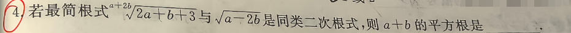

📷 点击查看原图
若最简根式 与 是同类二次根式，则 的平方根是 ______。
| 知识点 | 说明 |
|---|---|
| 同类二次根式 | 两个条件：根指数相同、被开方数相同，缺一不可 |
| 根指数识别 | 二次根号默认根指数为2，高次根式需看根号左上角 |
| 平方根 vs 算术平方根 | 平方根有两个值 ，算术平方根只有一个正值 |
| 方程组解法 | 代入消元法解二元一次方程组 |
同类二次根式需满足两个条件：根指数相同 被开方数相同
根式 的根指数是 ，被开方数是 。
第二个根式 根指数 （默认平方根），被开方数 。
列方程组：
① （根指数相等）
② （被开方数相等）
由②得：
代入①：
则
验证 （正数，被开方数合法 ✓）
题1（2023·江西·选择）：若 有意义，则 的值可以是（ ）A. B. C. D.
💡 答：D。由 。
📄 查看详细解答 →题2（2023·江西·选择）：计算 的结果为（ ）A. B. C. D.
💡 答：B。（）。
题3（2024·江西·填空）：计算 ______。
💡 答：。
📄 查看详细解答 →